From rainfall to runoff
Spatial rainfall, infiltration, surface/subsurface runoff and routing.
Explore this topic →K-WATER · DISTRIBUTED HYDROLOGY
K-DRUM distributed rainfall–runoff model
Represent the spatial differences of rainfall, terrain and soils to examine watershed storage and runoff.

Explore the model and its capabilities through the overview video, presentation and 18 feature illustrations.
The video illustrates watershed processes; it is not a numerical simulation result.
Scope notes · 2026-09-20 ↗ · Read the model overview →Spatial rainfall, infiltration, surface/subsurface runoff and routing.
Explore this topic →Soil water, evapotranspiration, snow and long-term water balance.
Explore this topic →Extensions to river networks, structures and river–floodplain exchange.
Explore this topic →Explore model applications and their scope in public studies.
Rainfall location, terrain, soil and storage states shape the movement of water across computational cells.
Spatial rainfall, infiltration, surface/subsurface runoff and kinematic-wave routing form the hydrologic foundation.
K-DRUM connects soil water, evapotranspiration and snow storage/melt through time for continuous watershed simulation.
1D networks, hydraulic structures, 1D–2D exchange and floodplain analysis have feature-specific development and validation boundaries.

K-DRUM updates grid-cell storage through time to connect rainfall, infiltration, evapotranspiration and runoff. Initial states and continuous forcing are key conditions for interpreting results.

Spatial rainfall inputs are station or gridded data mapped to computational cells with consistent intervals and units. Missing periods and mapping errors can affect runoff calculations.

Concept diagrams of rainfall, infiltration, evapotranspiration and runoff, not simulation results. The D-layer is in development. Image labels are in Korean.
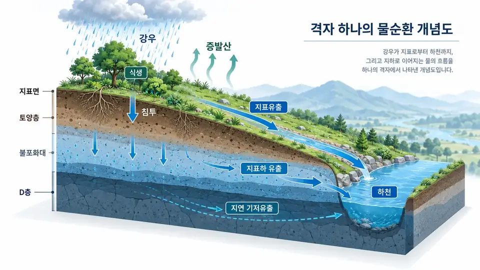
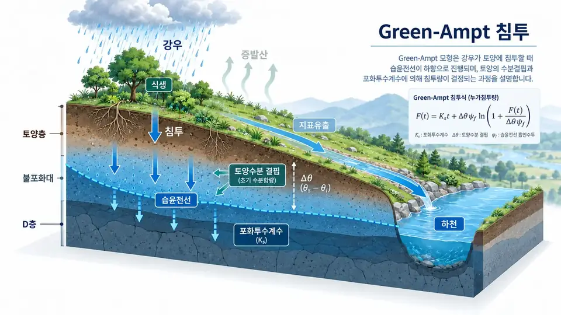
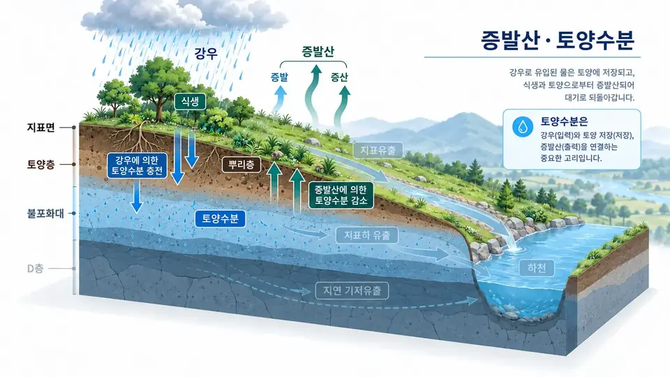
Stored soil water returning to the atmosphere.
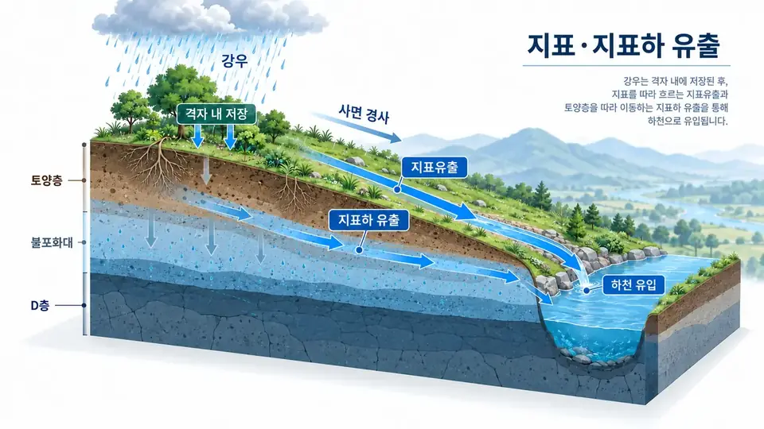
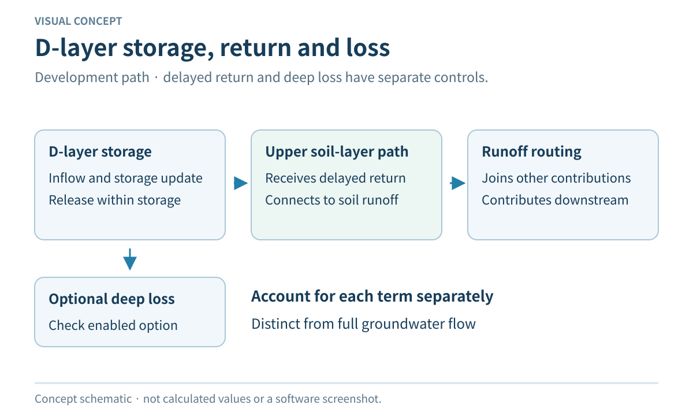
Choose a capability to explore its purpose, illustration and interpretation checks.
When rainfall varies across the watershed
Identify rainfall concentrations that a basin-average input can hide.
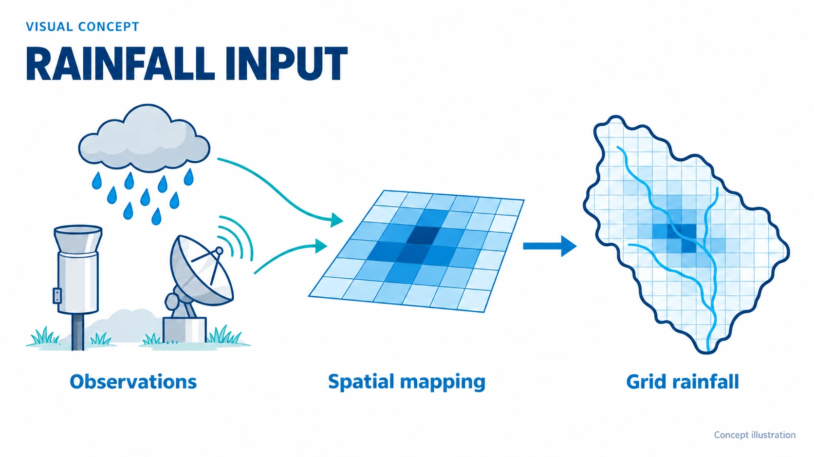
Follow the transfer from observations to grid-cell rainfall. Colors illustrate spatial allocation, not measured rainfall.
The connection to model cells depends on whether the source is station time series or a radar/gridded field. See Thiessen and IDW for station-based mapping.
Check forcing intervals, units and spatial coverage against the model domain.
Spatial rainfall forcing is established through public radar and gridded-rainfall applications.
When choosing how to distribute station rainfall
Compare the rainfall patterns produced by different mappings of the same observations.
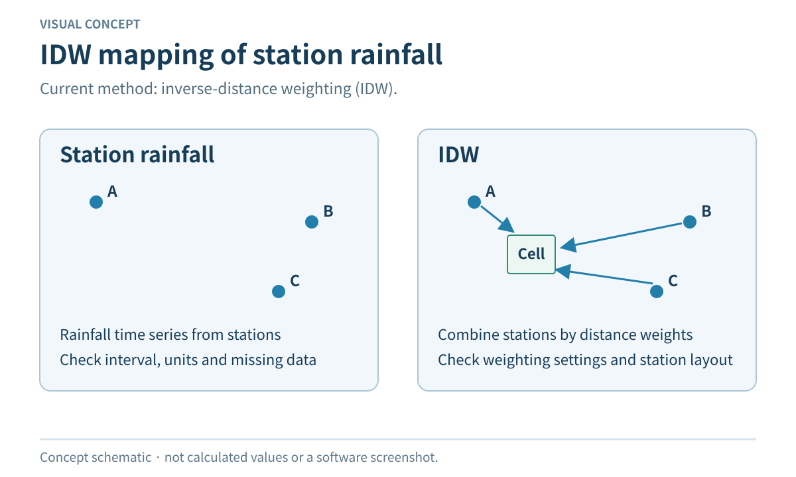
Compare Thiessen area selection with IDW distance weighting; no observations or mapped results are shown.
Thiessen delineates station influence areas; IDW uses distance-based weights. Review the mapping method together with the spatial distribution of stations.
Compare mapping results using the same stations and period, and review input QA.
Thiessen and IDW station-to-grid paths are implemented in the current Core and subject to regression QA.
When reviewing rainfall distribution and input quality
Distinguish elevation-adjustment effects from problems in the source observations.
Elevation adjustment changes the rainfall mapping, whereas QC inspects source-data quality. Read the two results separately to trace the cause of a change.
Review elevation-adjustment assumptions and missing or questionable source data; passing QA does not remove observational uncertainty.
Elevation-corrected IDW and rainfall QC are implemented quality-assessment functions in the current forcing path.
When checking gaps in the rainfall used for a run
Determine whether the event or low-flow period includes missing or forecast inputs.
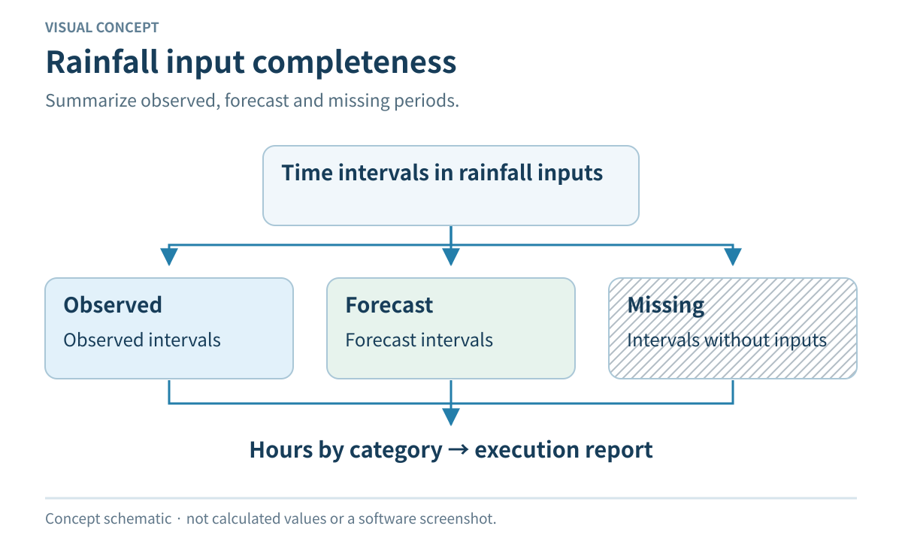
Read the three interval categories; obtain actual durations or proportions from the run report.
Durations are counted by observed, forecast and missing categories. Review both the overall composition and gaps within the period of interest when interpreting an event.
Check missing intervals and the forecast portion of the record. These counts do not fill missing rainfall.
Rainfall completeness summaries are implemented QA outputs connected to current run reporting.
When checking inputs before starting a run
Identify which inputs need correction before starting a simulation.
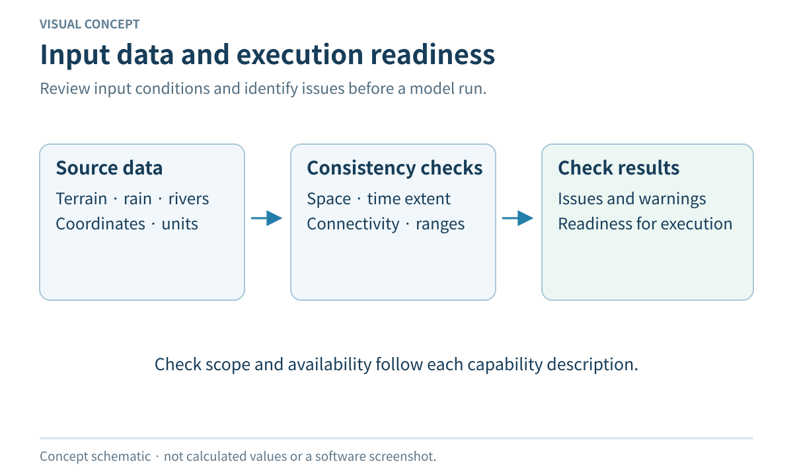
Follow source data, consistency checks and check results. This is not an input-editor screenshot.
Checks cover connectivity and value ranges as well as spatial and temporal extent. A project prepared in InputStudio still needs checks for the selected execution path.
Distinguish errors from warnings, review check coverage and rerun checks after corrections; result validation is a separate step.
Input prechecks remain in development as consistency checking is integrated across Core and InputStudio.
When examining how rainfall infiltrates the soil
Understand why soil conditions change the surface-runoff contribution under the same rainfall.
Distinguish rainfall at the surface, downward infiltration and wetting-front movement. Image labels are in Korean.
Rainfall intensity, initial moisture and permeability affect the division between infiltration and excess rainfall. Water entering the soil contributes to storage; the excess feeds surface runoff.
Review soil properties and initial moisture; infiltration and downstream discharge belong to different calculation stages.
The optional impervious-area split separates rainfall contributions using the paved fraction. Check that this option is enabled in the chosen path and review the land-cover data.
Hydrology concept gallery →Green-Ampt infiltration is an established formulation documented in public K-DRUM research.
When tracing runoff over the surface and through the soil
Separate rapid surface response from runoff contributed through soil layers.
Follow the surface and soil-layer pathways toward the channel. Image labels are in Korean.
Surface and soil-layer flows travel at different rates depending on slope and storage. Once these cell contributions enter a channel, channel routing follows.
Interpret storage changes together with routing; runoff generated in a cell is not the same as discharge at a downstream gauge.
Optional surface depression storage temporarily holds infiltration excess and accounts for evaporation and release. When enabled, distinguish generated excess rainfall from immediately routed surface runoff.
Hydrology concept gallery →Surface and subsurface runoff are established distributed-hydrology functions of the historical K-DRUM model family.
When simulating across rainfall events and seasons
Examine how preceding rain and dry periods affect the next event response.
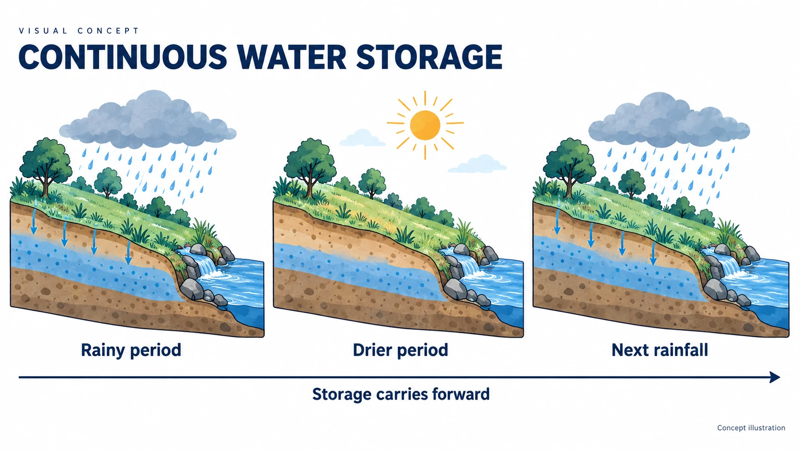
Notice how storage carries between rainy and dry periods.
Storage is inherited from the preceding time step rather than reset for each event. Antecedent wetness and the initialization method therefore define the starting conditions.
Check continuous forcing and initial states, then review seasonal balance and recession behavior together.
Continuous and long-term simulation is established through public long-term watershed-runoff applications.
When examining soil moisture between rainfall events
Examine whether dry-period soil-water depletion changes the response to later rainfall.
Follow stored soil water returning to the atmosphere through vegetation and the surface. Image labels are in Korean.
Reference demand is allocated using root depth and layer overlap, then limited by water available in storage. Vegetation conditions, including land cover and seasonal LAI, also contribute.
Review meteorological, soil and vegetation conditions, including the relationship between evaporative demand and stored water.
Canopy interception stores part of the rain on vegetation. After canopy evaporation, remaining demand passes to the soil. Unintercepted rain and canopy excess reach the ground; delayed canopy drainage is a separate option.
Hydrology concept gallery →Evapotranspiration and soil-water accounting are established continuous-hydrology functions with ongoing QA modernization.
When examining runoff during snow accumulation and melt
Investigate whether snow accumulation and melt explain a delay between precipitation and runoff.
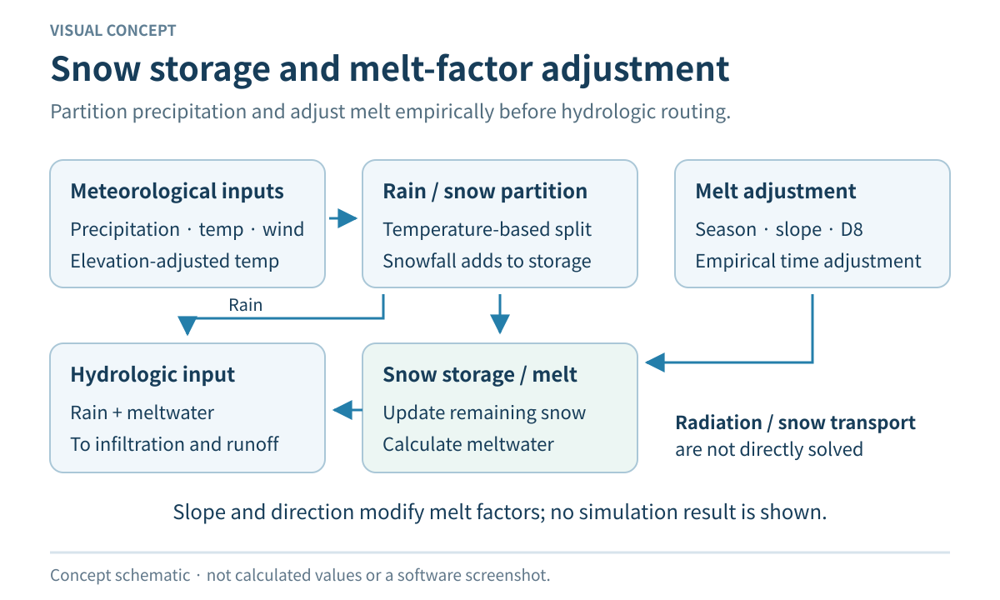
Follow rain/snow partitioning, melt-factor adjustment, snow storage and meltwater. Terrain conditions modify the melt factor.
Temperature partitions rain and snow. Elevation-based temperature adjustment and empirical season, slope, D8-direction and time factors modify melt; meltwater leaves snow storage and enters hydrologic inputs.
Review precipitation, temperature, wind, elevation, slope and D8 direction. Direction/time adjustment is empirical, not a direct radiation or snow-transport calculation.
Snow accumulation and melt are established through public long-term snowmelt applications.
When preparing initial soil and runoff states
Assess whether early results remain strongly influenced by the initial conditions.
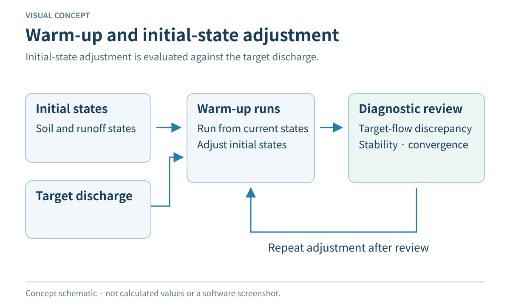
Follow adjustment, target-site review and iteration; this is different from simply restoring a checkpoint.
The iteration adjusts initial soil and runoff states. Read target-flow discrepancies alongside state changes; stabilization behavior depends on the basin and starting conditions.
Inspect remaining target-flow error and state changes, rather than treating termination as proof of stabilization.
Warm-up is integrated in the current Core as an implemented QA function; initial-state convergence remains basin-specific.
When continuing from a previously saved model state
Prepare a continuation state when a simulation is carried out in stages.
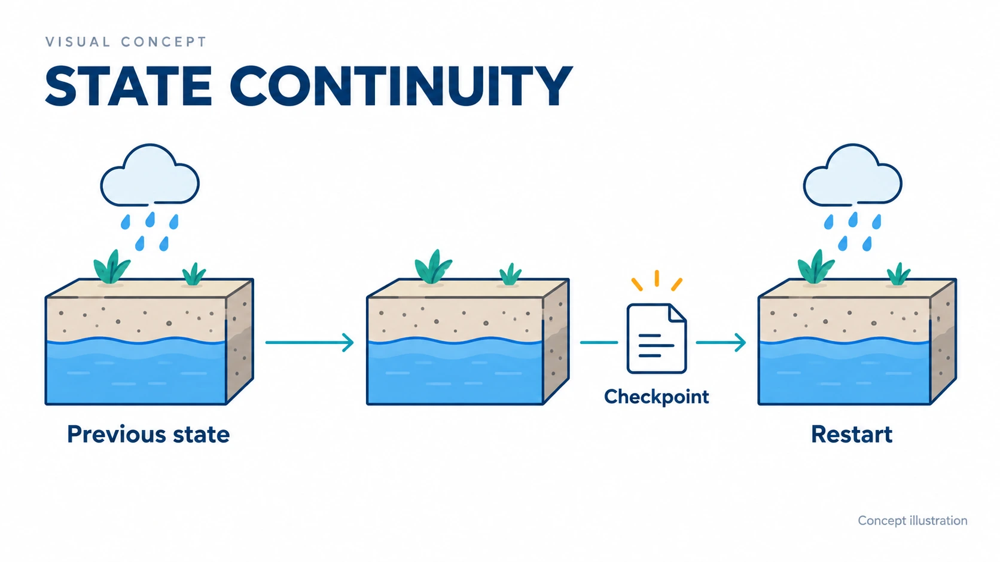
Follow the saved state becoming the starting point for the next computation.
Restart reads saved grid hydrologic and reservoir states. Unlike iterative warm-up adjustment, HotStart initializes by restoring a stored checkpoint.
Check grid, state, time and coverage of required additional states; do not assume identical restart support for every hydraulic extension.
HotStart is an implemented checkpoint and state-restart capability under QA in the current Core.
When investigating persistent low flows after rainfall
Examine the persistence of recession flow and low flows after rainfall ends.
Distinguish delayed return from D-layer storage to an upper soil layer and the separately enabled loss term.
Delayed D-layer return feeds an upper soil-layer pathway. Deep loss requires a separate physical-hydrology option, so return and loss must be accounted for as different pathways.
Compare recession curves and low flows with observations. This storage representation is not a full groundwater-flow solver.
D-layer and delayed baseflow return remain under development as extensions to long-term storage and baseflow representation.
When representing different hillslope and channel slopes
Identify whether hillslope or channel slope is relevant to a routing difference.
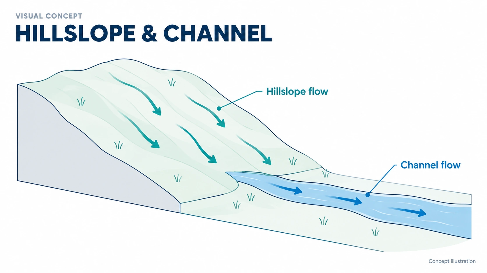
Identify the hillslope and channel pathways; the image is not a numerical comparison of slopes.
The slopes represent terrain conditions in separate domains, not successive processing stages. Each value is applied to its corresponding hillslope or channel calculation.
Review the derivation, direction and units of each slope, and check that the intended slope is assigned to each pathway.
Separate hillslope and channel slopes are implemented in current routing paths and subject to QA.
When tracing hillslope runoff downstream
Trace how generated cell runoff travels before entering the river.
This calculation routes flow between hillslope cells. It receives runoff determined by infiltration and storage, separating runoff generation from its subsequent transport.
Check hillslope connectivity and routing conditions, and distinguish its scope from complex backwater hydraulics.
Hillslope kinematic routing is an established routing formulation documented in public K-DRUM research.
When routing watershed inflows along channels
Examine how upstream and lateral contributions form the downstream discharge time series.
Lateral inflow joins routed upstream flow; channel length, width, slope and roughness define routing conditions. Cross-section-based water-level analysis belongs to the separate dynamic-wave development path.
Check channel geometry, slope, roughness and connectivity; distinguish this from dynamic-wave water-level and discharge analysis.
Channel kinematic routing is an established foundation of historical K-DRUM discharge routing.
When investigating water transfer from rivers to deep storage
Check how water transferred out of the river contributes to deeper storage.
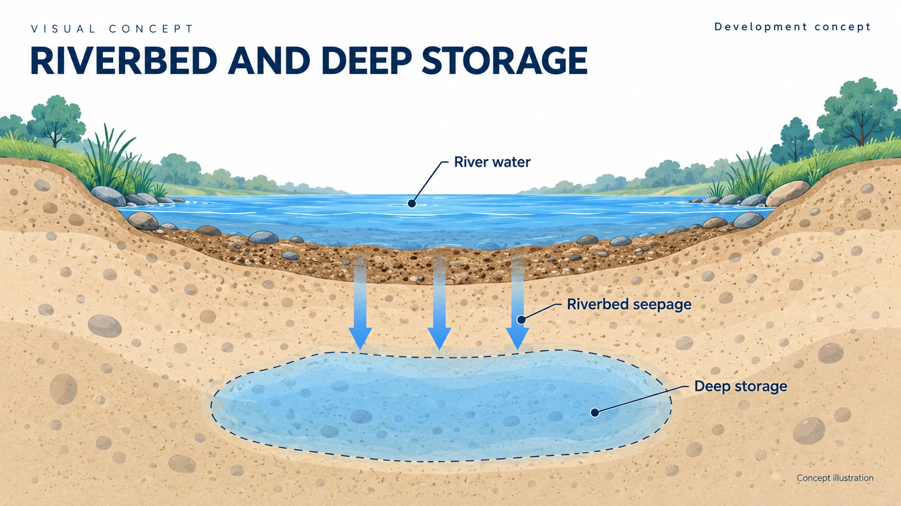
Follow the riverbed-to-storage arrow; its size does not represent an actual flux.
Transfer is constrained by infiltration capacity, D-layer storage space and available river water. Compare the river reduction with the deeper-storage increase over the same interval.
Review infiltration capacity, available deep storage and consistent transfer accounting between the domains.
River infiltration to deeper storage is a current development capability linked to D-layer water accounting.
When terrain data do not adequately describe the river bed
Assess whether hydraulic terrain adequately represents the submerged low-flow channel.
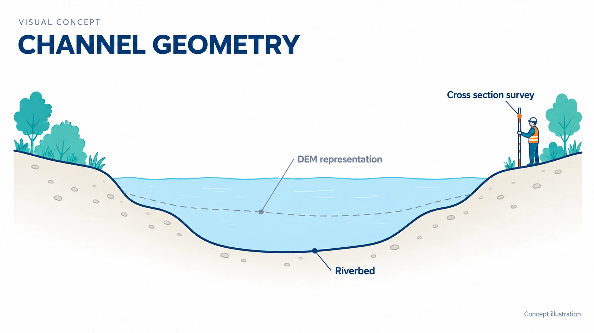
Compare the terrain surface with the riverbed or low-flow geometry that requires supplementation.
Riverbed geometry is supplemented within the information available from the DEM, centerline and additional sections. Check elevation reference and terrain continuity before hydraulic use.
Review supporting centerlines or cross sections and vertical references; distinguish supplemented terrain from original survey data.
ChannelBed remains in development as a reusable terrain and channel-bed preparation tool.
When checking inflows, outflows and changes in storage
Check water-accounting closure before investigating discharge discrepancies.
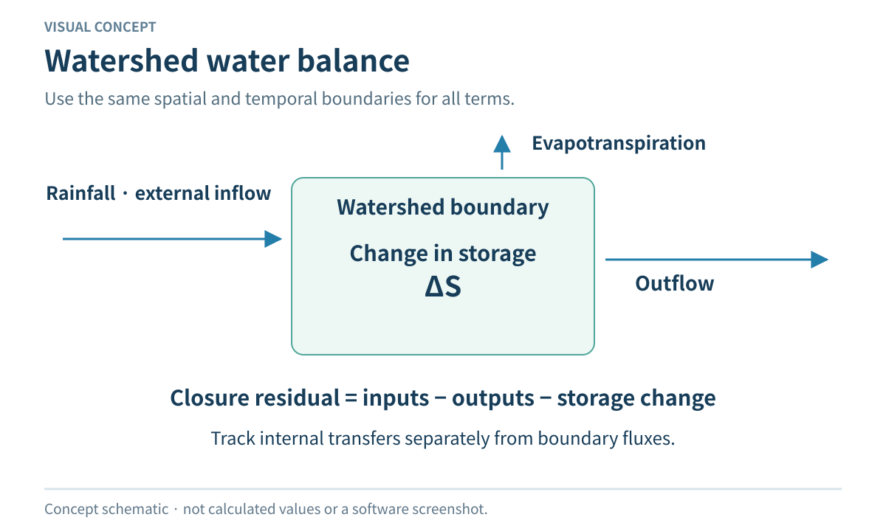
Distinguish boundary fluxes from changes in storage inside the watershed.
Aggregate external inputs, outputs and storage changes over matching space and time. Distinguish transfers between layers from boundary fluxes to avoid double counting.
Use the same domain, period and units for all terms; a small residual does not establish agreement with observed discharge.
Basin water-balance assessment is implemented QA integrated with current Core reporting and validation.
When checking water exchanged between river and floodplain
Check whether the volume leaving the river is fully accounted for in the floodplain.
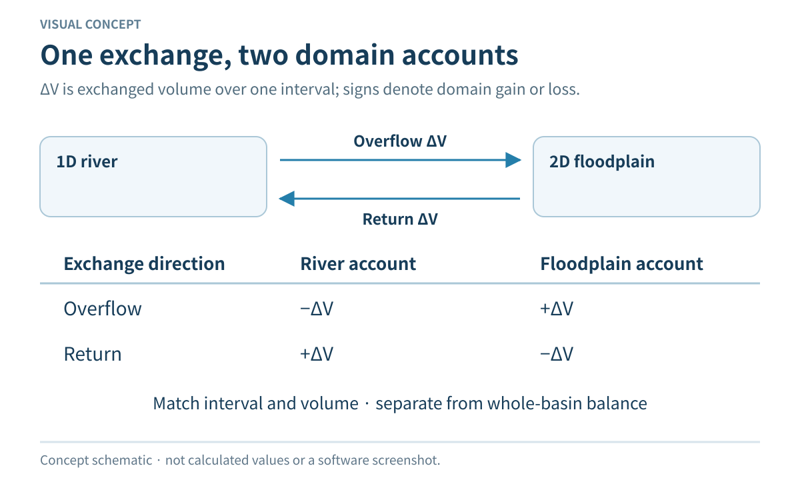
Read opposite signed entries for the same exchange volume, separating overflow and return flow.
Match one exchange volume to opposite signed entries in the two domains. One-way overflow accounting and two-way exchange diagnostics have different coverage depending on the execution path.
Match exchanged-volume units and accounting intervals, then check correspondence with storage changes in both domains.
1D-2D exchange consistency has controlled development validation; it does not certify water balance for every basin.
When reviewing run settings and warnings together
Find the conditions and warnings to compare first when two runs differ.
The report places execution mode and initial state alongside diagnostics. Relate changes in these conditions to changes in water balance and runtime when comparing cases.
Confirm run mode and initial states first, then review warnings and water balance.
Unified run reporting is an implemented QA summary of current run information and diagnostics.
When comparing different parts of a watershed
Locate regional contributions hidden in basin-wide results and narrow the next review.
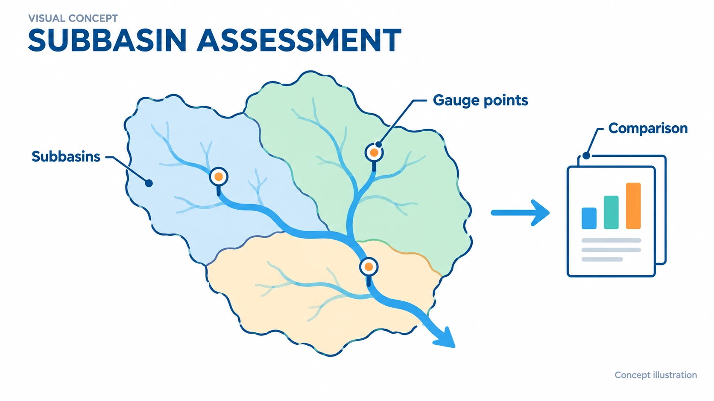
Read the relationship between subbasin boundaries and evaluation points in the illustrative domain.
Results are grouped by subbasin boundaries and related to evaluation sites. A gauge integrating upstream contributions may not represent the same spatial extent as one subbasin aggregate.
Check boundaries, gauge correspondence, periods and units; reporting units do not perform parameter calibration.
Subbasin reporting is an implemented QA capability included in the defined outputs of successful runs.
When evaluating parameter sets against observed discharge
Judge which target-site characteristics improve or deteriorate: peak, volume or recession.
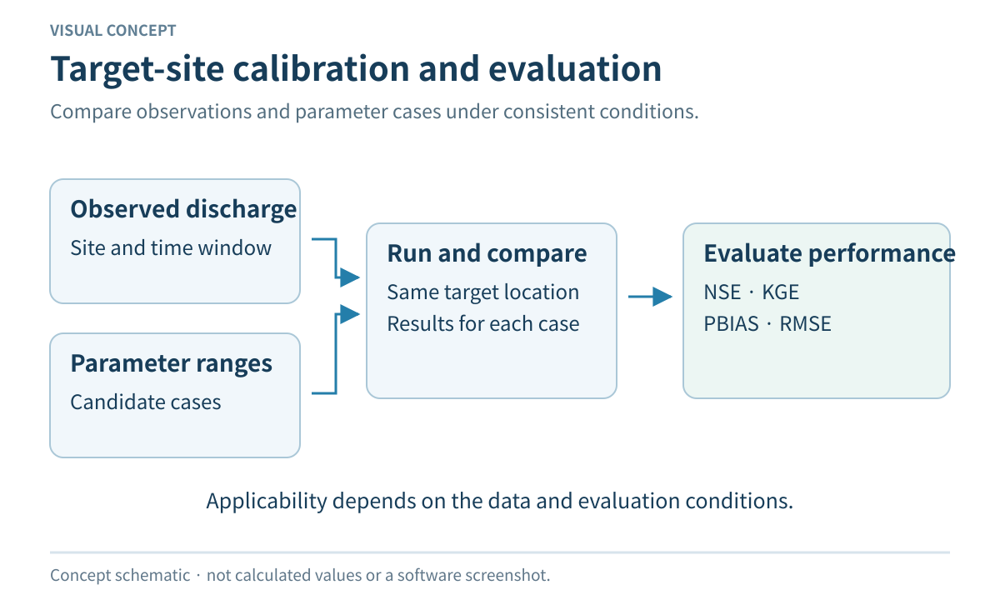
Follow observations and candidate parameters into a common evaluation; no optimization performance is demonstrated by the schematic.
Read NSE, KGE, PBIAS, RMSE and related metrics across GRID/OAT-style cases. Improvement in one metric does not establish improvement in every hydrograph characteristic.
Review observation quality and evaluation periods, inspect peaks, timing, volume and recession, and reassess outside the calibration period.
Target-point calibration and optimization remain in development with grid/OAT-style case comparison and multiple performance metrics.
When deciding which subbasins and target locations need calibration
Prioritize which subbasin findings to bring into calibration review.
Use subbasin diagnostics to choose a focus, compare target-site cases, then revisit regional results. This decision-support process connects reporting with parameter-case evaluation.
Check how subbasin findings relate to the target site; do not assume automatic parameter targeting for every subbasin.
Subbasin calibration support remains in development; automatic subbasin parameter targeting is not generally applicable.
When checking whether output files were completed correctly
Decide whether outputs are ready for postprocessing by reviewing errors and required content.
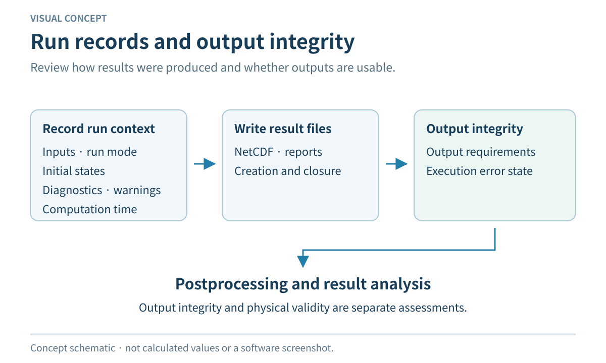
Follow file creation, output checks and handover to postprocessing.
The lifecycle tracks file creation through closure. It checks required content and completion status, whereas the run report explains the conditions under which results were produced.
Review error states and required outputs; valid files do not by themselves establish physically valid results.
Output integrity and lifecycle checks are implemented QA supporting NetCDF, report and viewer integration.
When exploring water-level and discharge simulation in river networks
Explore a hydraulic path for examining water-level and discharge interactions between reaches.
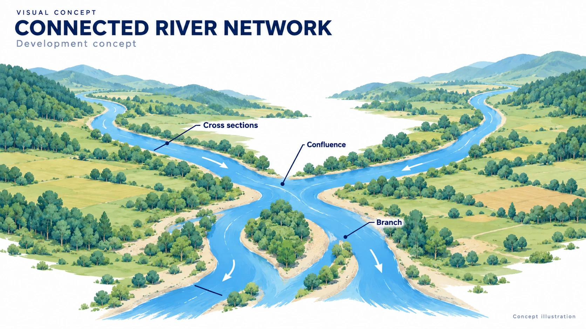
Identify tributaries, the main river, branches and cross sections; arrows indicate conceptual connectivity.
Cross sections and reach connections define the computational network. Reach hydraulics work with junction treatment; see the junction entry for that local coupling role.
Review network geometry, cross sections, boundary conditions and observed levels or flows for the basin of interest.
The 1D dynamic-wave river network remains in development with ongoing reliability, integration and regression validation.
When examining river branches and confluences
Examine how reach discharges and water levels connect at a confluence or branch.
The focus is a junction within the wider network. Flow continuity and hydraulic conditions connect the calculations of the adjoining reaches.
Review connection direction and continuity together with the adjacent reaches.
Branch and confluence reliability and hydraulic behavior remain major topics in river-network development and verification.
When investigating how gates and overflow structures affect flow
Examine which water levels and dimensions govern flow across a structure.
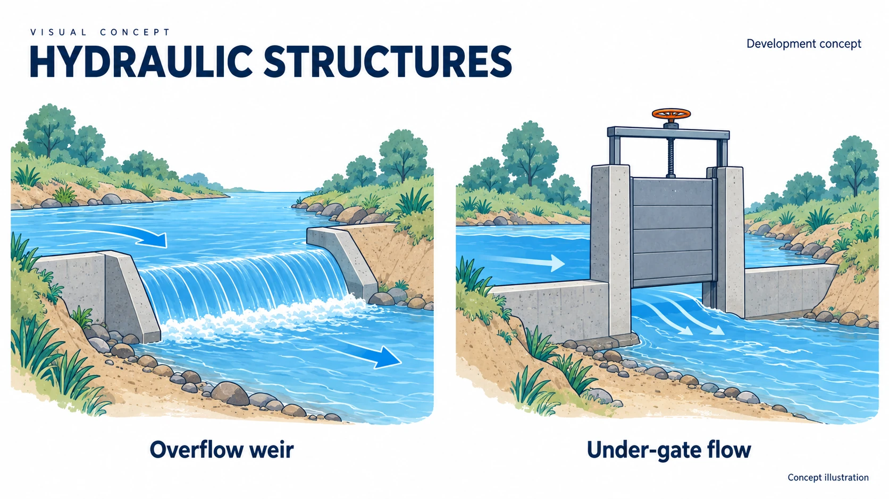
Compare overflow across a crest with flow beneath a gate; dimensions are illustrative.
Overflow at a crest and flow beneath a gate use different structure conditions. The calculated discharge is transferred into the upstream and downstream computations.
Check structure type, dimensions, water levels and the applicable discharge relationship against the actual structure data.
Hydraulic-structure discharge and common interfaces remain under integration across 1D and 2D calculation paths.
When examining storage and releases under reservoir operating rules
Read how specified operating rules constrain storage and releases.
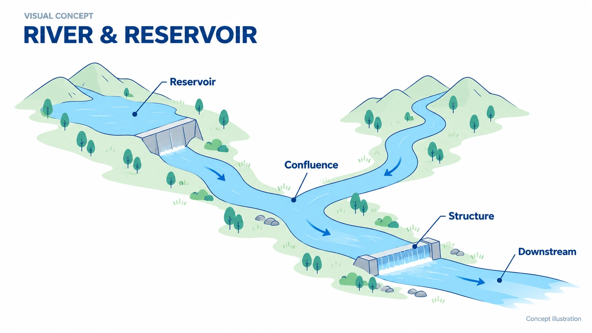
Identify reservoir inflow, release and downstream connections, not recommended release values.
Constraints include water level, environmental flow and release-change limits. Forecast-based alternatives and multi-reservoir case comparison are covered in separate entries.
Obtain and review the applicable rules, release constraints and initial storage; this website does not supply actual operating rules.
Dam and reservoir operation remains in development; the public repository describes capability scope without actual operational rules.
When exploring release alternatives using inflow forecasts
Compare how release alternatives and downstream effects change with forecast inflow.
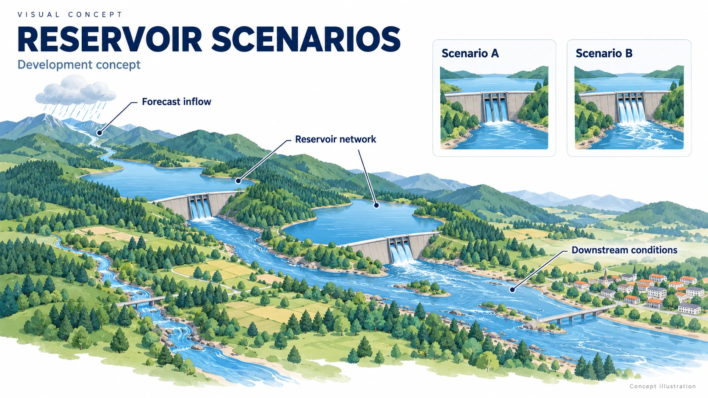
Read forecast inflows, reservoirs and downstream assessment reaches together.
Forecasts add information to the current operating state. Alternatives are evaluated with a forecast horizon and downstream constraints, making forecast uncertainty part of the interpretation.
Review forecast uncertainty, reservoir states and downstream constraints; scenario analysis is separate from operational authorization.
Forecast, pre-release and downstream-control support remains decision-support development, without real-time operational certification.
When comparing operating alternatives across multiple dams
Compare trade-offs between reservoir-network alternatives under common evaluation conditions.
Keep reoperation and retracing alternatives separate from the original simulation. Evaluated alternatives do not imply automatic replacement of official hydrologic or NetCDF outputs.
Align inflows, evaluation periods and metrics, then compare both improvements and trade-offs.
Multi-dam operation and reoperation remain development capabilities for research and dam-network scenario assessment.
When examining both overflow and return flow
Consider whether return flow from the floodplain to the river needs to be represented.
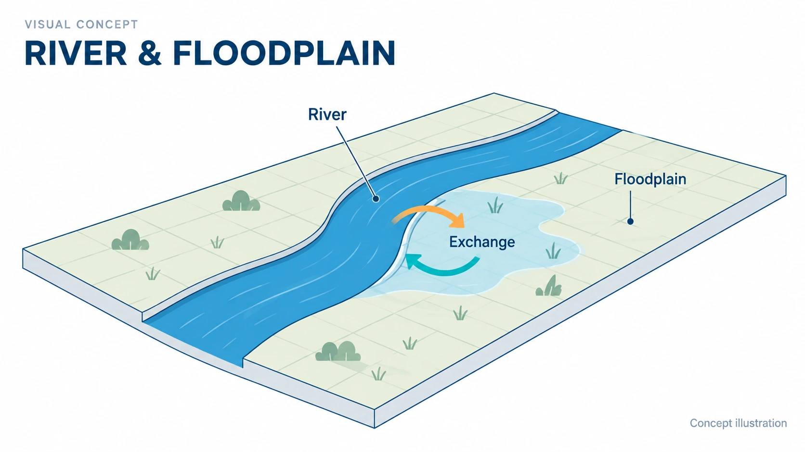
Identify outward and returning flow paths across the river–floodplain boundary.
Overflow and return fluxes at the interface connect the domain states. One-way and diagnostic-only paths also exist; confirm that the selected mode actually applies feedback.
Compare interface geometry, stages, time steps and accumulated exchange with storage changes in both domains.
Bidirectional 1D-2D exchange has been demonstrated in controlled development validation, without universal basin applicability or production certification.
When exploring flood propagation across a floodplain
Review flood spreading through space and time together with computational cost.
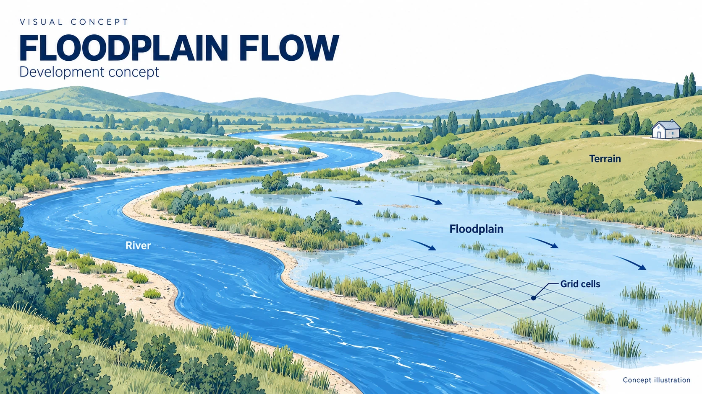
Read the terrain, water and computational cells; the image does not show equations or an actual flood prediction.
This main 2D development path uses terrain and boundary conditions to compute cell depth and unit-width discharge. Compare its purpose with Full SWE where fuller momentum representation is needed.
Review terrain, grid, boundary conditions and numerical settings for the flow regime of interest.
2D Local Inertia is the main floodplain development path and remains under integration and verification.
When considering how to represent rapidly changing flow
Inform the choice of a solver for water-surface and velocity changes in a focus area.
Cell-face fluxes update depth and momentum in both horizontal directions. Time-step constraints based on depth and velocity work with wetting/drying treatment, so review settings together with terrain resolution and boundary conditions.
Distinguish its purpose, settings and validation scope from Local Inertia; greater complexity does not guarantee greater accuracy.
Full SWE remains a specialized development option and is not presented as the default production path.
When balancing domain size and resolution in areas of interest
Consider where retaining source-terrain resolution provides useful detail for the computational cost.
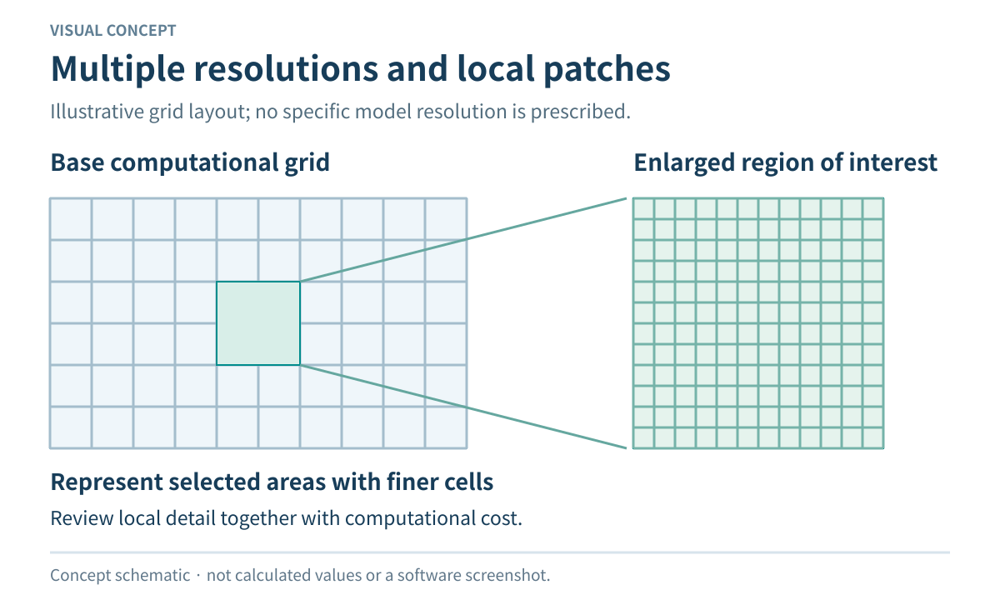
See background cells grouped from one source grid while selected areas retain source resolution.
Background cells group source-terrain cells while patches retain source resolution. Evaluate patch-interface connections together with terrain changes introduced by background aggregation.
Check source resolution, background aggregation and patch interfaces. Patch detail is relative to the background, not finer terrain information than the source.
Multi-resolution and patch 2D remain in development for focused high-resolution hydraulic domains.
When considering rainfall, drainage and other floodplain processes
Distinguish additional forcing and structure effects from transport-analysis layers.
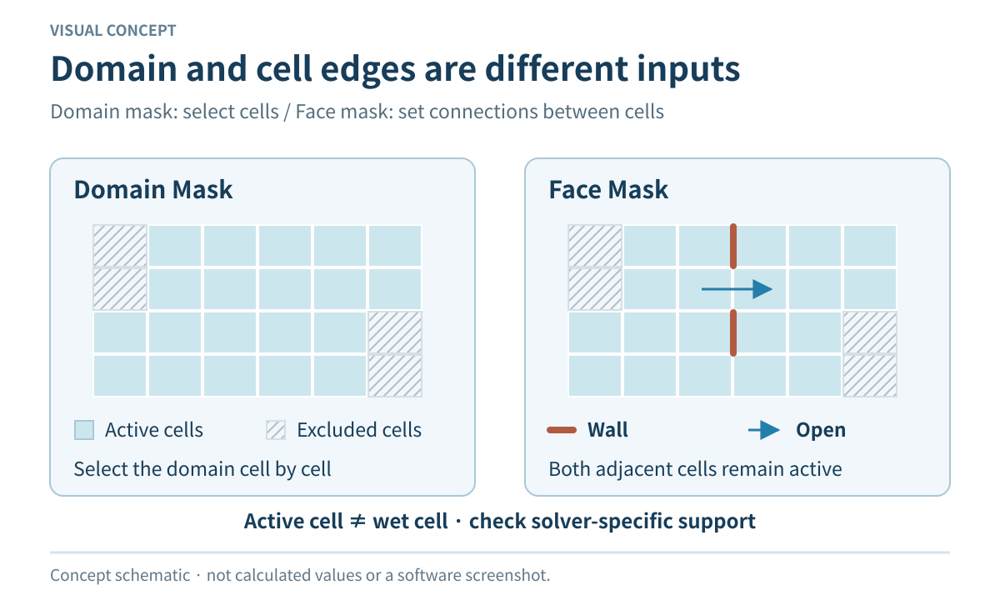
The left panel selects computational cells; the right sets connections between active cells. The same cells can have different edge conditions. Wall/open examples are conceptual; check support for the selected solver.
Rainfall and drainage affect water inputs and outputs; structures affect flow connections. Tracers and particles help interpret transport along the flow, with supported combinations checked per component.
Check support and validation for each selected component rather than assuming universal support across all configurations.
A domain mask selects computational cells; a face mask specifies passage or blocking at shared cell edges. Distinguish the inputs and check support in the selected solver path. A mask is not a map of wet cells at a given time.
2D rainfall, drainage, structure and tracer integration remain in development with component-specific validation scope.
When researching hillslope erosion and deposition
Distinguish sediment source areas on hillslopes from their downstream contributions.
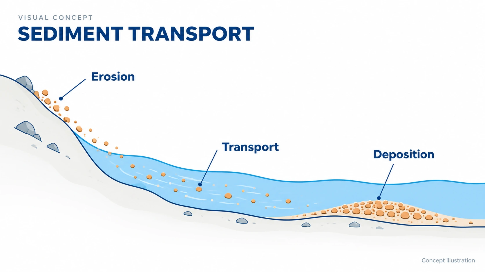
Follow hillslope erosion, transport by flow and downstream deposition.
The relation between sediment supply and transport capacity governs erosion, movement and deposition. Interpret soil conditions, slope and velocity rather than using runoff volume as a proxy for sediment load.
Review sediment sources, soil conditions and transport-capacity assumptions against sediment-specific evidence.
The hillslope sediment and erosion-deposition path is a research function still requiring dedicated public validation documentation.
When researching sediment transport and deposition in rivers
Examine whether incoming sediment passes through a reach or is deposited.
Incoming sediment is evaluated together with channel transport capacity. The scope is reach transport and deposition, downstream of hillslope sediment generation.
Review upstream sediment supply, channel conditions and transport capacity, distinguishing sediment production from river transport.
River sediment transport and deposition remain research functions subject to explicit assessment of application conditions and scope.
When researching the transport of a conservative substance
Inspect arrival timing and the evolving concentration curve of an injected conservative tracer.
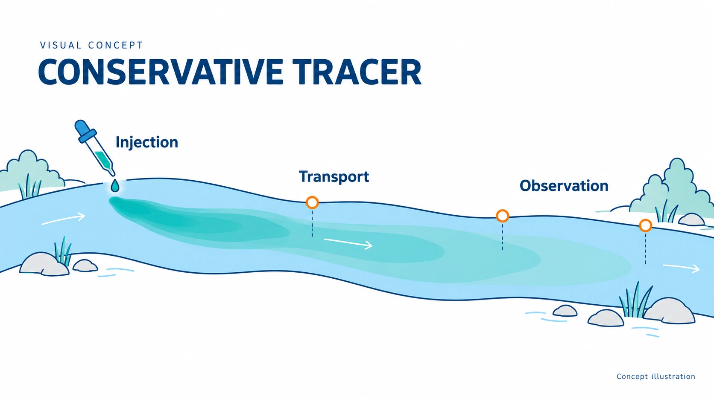
Identify injection and downstream observation locations; colors are not measured concentration classes.
Injected mass moves with river storage and upstream/downstream flow. Because concentration also depends on the amount of stored water, read mass movement and concentration changes together.
Review injected mass, timing, discharge and mass conservation; distinguish conservative transport from reactive water-quality prediction.
Dye and conservative tracing are research transport functions present in the river calculation path outside warm-up.
When checking the current availability of water-quality processes
Check whether the intended analysis is available in the current package.
Water-quality calculations are disabled in the current build.
Historical code does not establish present availability. Nitrogen, phosphorus and BOD processes require redesign and validation and have a different scope from conservative transport.
Check the package scope; do not expect active water-quality calculations or outputs, or confuse them with conservative tracers.
The water-quality process module is disabled and remains a redevelopment candidate outside current production capabilities.
When choosing an execution mode for available computing resources
Compare whether available resources reduce runtime while preserving result consistency.
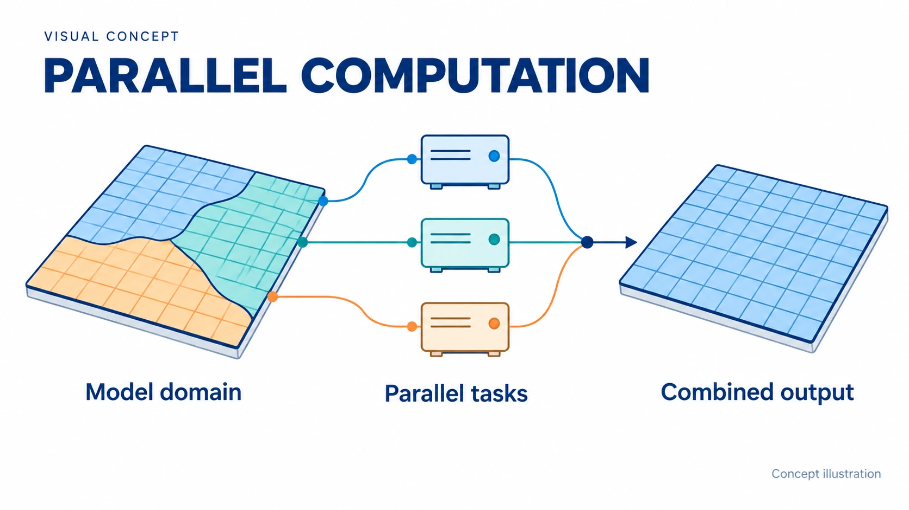
Read task partitioning and combination; the image is not a performance benchmark.
OpenMP partitions work in shared memory and MPI across distributed memory. Assess historical MPI research and the currently modernized execution paths using their respective evidence.
Compare result consistency and elapsed time for the same inputs; additional cores need not yield proportional speedup.
MPI has an established public research lineage; current serial, OpenMP and MPI consistency remains under modernization and QA.
When reading output variables, coordinates and times in other tools
Determine whether results from different files can be compared at matching locations and times.
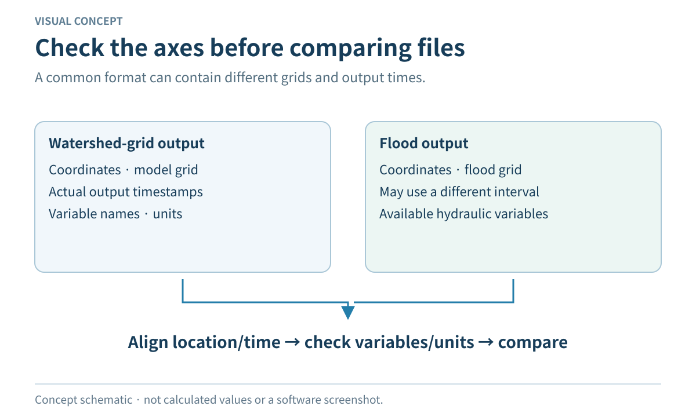
Inspect coordinates, times, variables and units per file. A shared format does not imply a shared grid or timestamps.
Watershed and flood outputs may have separate files, grids and output intervals. A common format does not imply identical coordinate or time values; align the actual axes before comparison.
Match the variable names, dimensions and units required by the analysis tool to those recorded in each file.
NetCDF integrated output remains in development for standardized result storage and viewer integration.
When exploring spatial patterns and time series in model output
Relate changes at a location of interest to the surrounding spatial pattern.
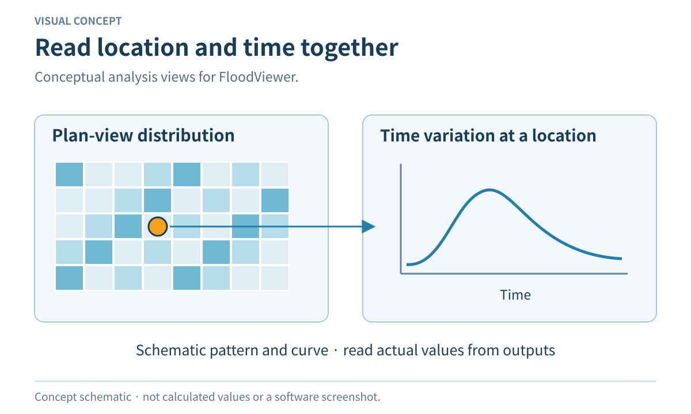
Connect a location on a plan-view map with its time variation. This is not a software screenshot or a simulation result.
Available variables depend on the loaded files. Interpret plan-view maps with time series; longitudinal–vertical estuary sections belong to a separate viewer scope.
Check actual timestamps, coordinates and displayed units; read spatial comparisons with consistent legend ranges.
FloodViewer has Release Candidate maturity and is not presented as a final public release.
When assembling source data into a model-input project
Prepare scattered source data and simulation settings as a reviewable project.
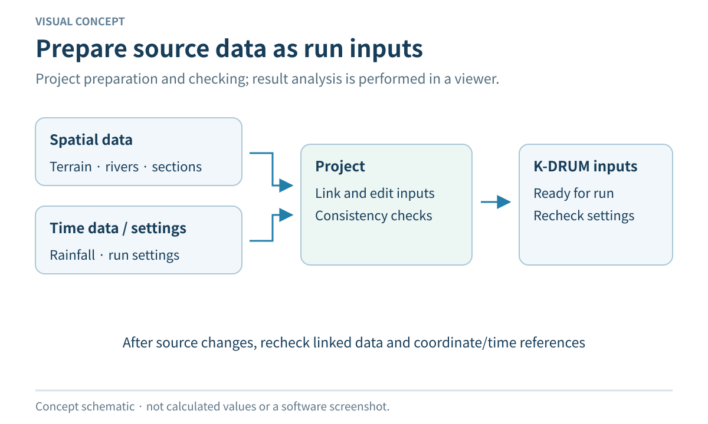
Organize source data into a project, check it and prepare engine inputs. This is not an editor screenshot.
Preparation and checks produce engine inputs. After a source-data change, recheck spatial/time references and connected data; post-run result inspection belongs in a viewer.
Review engine input files for missing required data and inconsistencies introduced by source-data changes.
Within an input project, edit computational domains and cell-edge conditions, and prepare separate scenario inputs for supported items. Check domain/edge consistency and distinguish Base data from scenario outputs.
InputStudio remains in development to integrate project-input authoring and prechecks.
When researching longitudinal and vertical estuarine flow and salinity
Study how river inflow and marine boundaries affect vertical salinity structure.
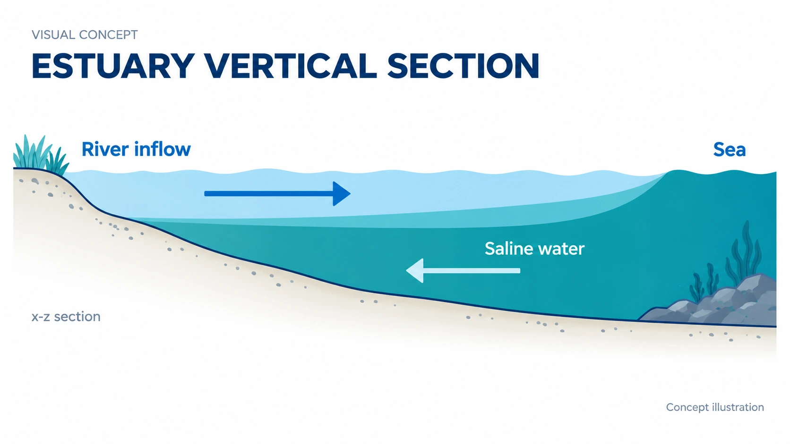
Read the vertical freshwater–seawater distribution in an x-z section, not a plan-view flood map.
The longitudinal–vertical x-z domain uses width-averaged, hydrostatic assumptions. Its coordinates and modeled processes differ from plan-view flooding; integration and outputs are build-dependent.
Align upstream inflow, tidal and salinity time references and boundary conditions, and compare stratification with observations.
Estuary2DV is an experimental estuary hydrodynamics and salinity prototype separate from Core production capabilities.
When comparing longitudinal profiles, cross sections and time series
Connect a water-level change to its river reach, cross section and time.
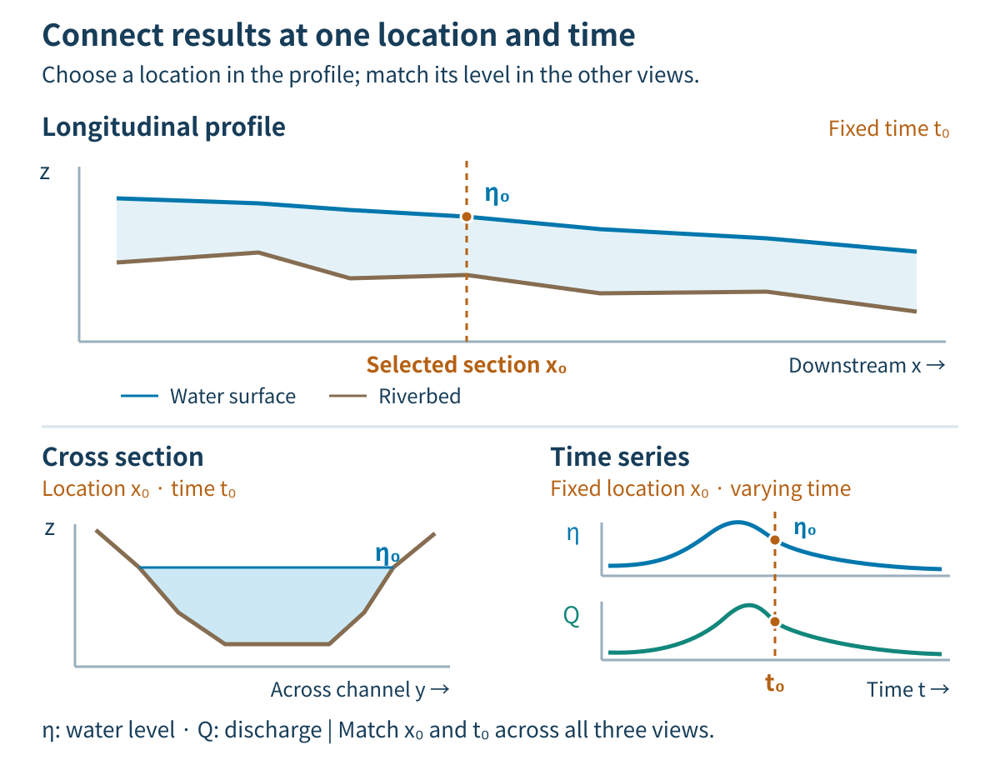
Profiles show along-river change, cross sections show geometry, and time series show temporal change; these are not screenshots.
Longitudinal profiles show along-river change, cross sections show geometry and level, and time series show temporal evolution. Interpret the views using matching cases and times.
Check its unpublished status and result-file compatibility; the solver and viewer serve different roles.
Tables and network navigation help locate reaches and results. Availability and input requirements for the separate vertical 2DV view depend on the development candidate.
The 1D River Hydraulics Results Viewer is under separate development and has not yet been published to the public GitHub repositories.
These diagrams illustrate temporal and spatial characteristics of results; they are not calculations from a real basin. Run completion, water-balance consistency and observation comparisons are distinct evaluation criteria.

Separate flood-area mapping estimates candidate inundation areas from terrain, water-level sources and an allowed domain. Distinguish it from dynamic 2D depth/flow simulation; first identify which calculation path produced the file.
Rainfall, soil water and runoff distributions support comparison over a common domain and period. The scope of flood outputs depends on the development status of the hydraulic function.
Hydrographs support comparison of observed and calculated peaks, timing and recession behavior using consistent units and time intervals.
Water-balance evaluation uses the definitions and accounting domain of inputs, outputs, storage and losses. Execution success alone establishes neither balance nor predictive accuracy.

Input preparation, computation, output storage and result analysis have distinct roles across the programs. Each program has its own availability and development status, separate from established Core hydrology.

K-DRUM Core is built around established distributed hydrology and kinematic routing. Hydraulic and flood extensions within Core retain their feature-specific development status and are not all established capabilities.
InputStudio is under development for project-based authoring and QA of terrain, rainfall, rivers, sections, structures and scenarios.
FloodViewer provides integrated map and time-series analysis of K-DRUM hydrologic and hydraulic results.
ChannelBed is under development to supplement channel-bed and low-flow geometry where surface DEMs are insufficient.
Records hydrologic and hydraulic variables, units, coordinates and time information in NetCDF format.
Estuary2DV is a separate x-z research prototype for estuarine hydrodynamics and salinity.
A separate application in development for longitudinal sections, cross sections and stage/discharge time series.
Public studies document K-DRUM applications within the basin settings, input data and scope of each study.
2012
Watershed flood-runoff simulation with rainfall varying across space and time
The study examined radar-driven flood-runoff simulation for typhoon and convective storms in Korea's Namgang watershed.
Radar rainfall was mapped to computational grids, with hydrologic inputs derived from DEM, land-cover and soil data. Infiltration and surface/subsurface runoff were represented, and flow was routed through the channel network using kinematic waves.
This is an offline storm-event application published in 2012. It does not establish validation of the dynamic-wave river-network or 2D floodplain extensions now under development.
Development and application of GIS based K-DRUM for flood runoff simulation using radar rainfall ↗
2013
Long-term runoff simulation with watershed snow accumulation and melt
The application to Pakistan's Kunhar River Basin considered elevation-dependent weather, snow accumulation and melt in long-term runoff simulation.
GIS spatial inputs and elevation-dependent temperature and rainfall inputs were used to calculate long-term discharge with snow accumulation and melt.
This 2013 study concerns one mountain basin. Snow processes are supported by the public research record; application elsewhere still requires suitable weather inputs and basin-specific validation.
2017
Coupled analysis of river flow continuing after rainfall ends
A 2017 conference presentation proposed coupling K-DRUM with MODFLOW for long-term water-cycle and low-flow analysis.
The proposed exchange passes K-DRUM deep percolation to MODFLOW as groundwater recharge, then returns MODFLOW baseflow to K-DRUM river runoff.
The record presents a coupling method and intended future use. It does not establish a measured accuracy improvement or coupling availability in the downloadable version. Current D-layer/baseflow-return and river-infiltration extensions remain ACTIVE DEVELOPMENT.
MyWater provides official K-DRUM materials and distribution information.
{kind=link}
{kind=link}
{kind=link}
{kind=link}
{kind=link}
{kind=link}
{kind=link}
{kind=link}
{kind=link}
{kind=link}
{kind=link}
{kind=link}
{kind=link}
{kind=link}
{kind=link}
{kind=link}
{kind=link}
{kind=link}
{kind=link}
{kind=link}
{kind=link}
{kind=link}
{kind=link}
{kind=link}
{kind=link}
{kind=link}
{kind=link}
{kind=link}
{kind=link}
{kind=link}
{kind=link}
{kind=link}
{kind=link}
{kind=link}
{kind=link}
{kind=link}
{kind=link}
{kind=link}